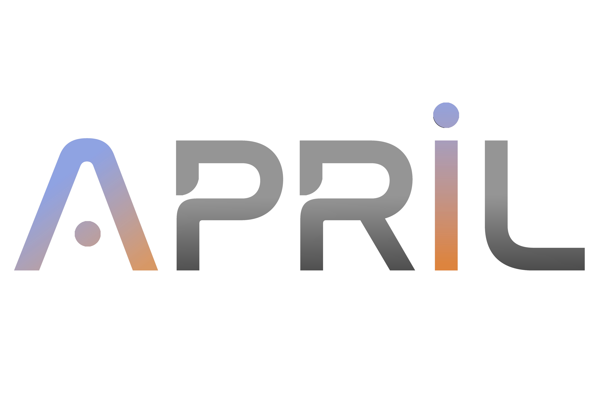
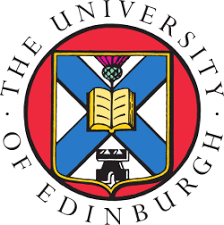
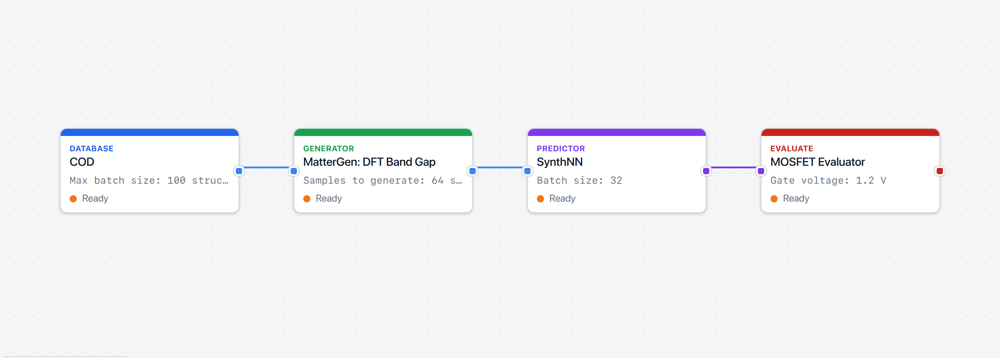
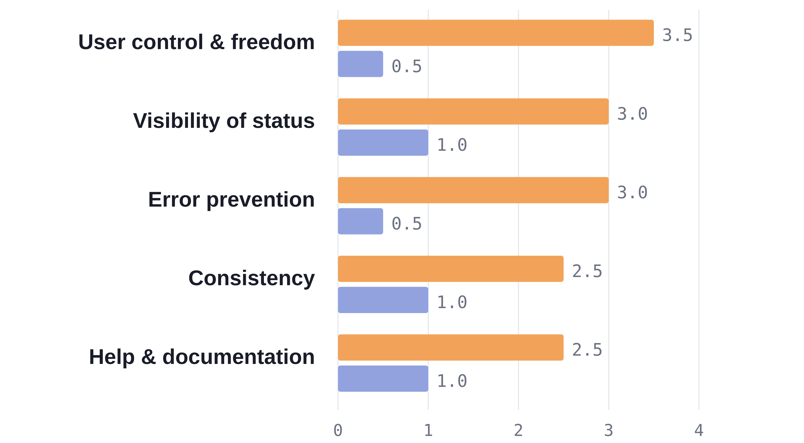
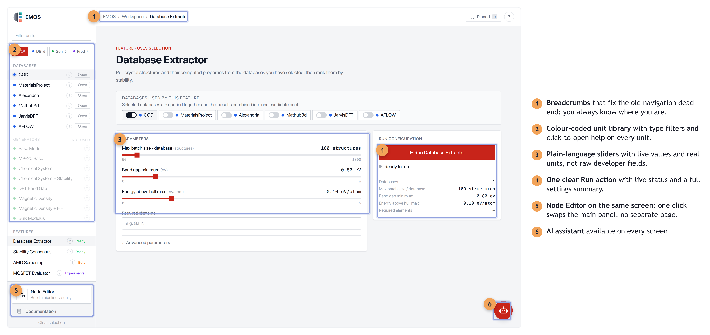
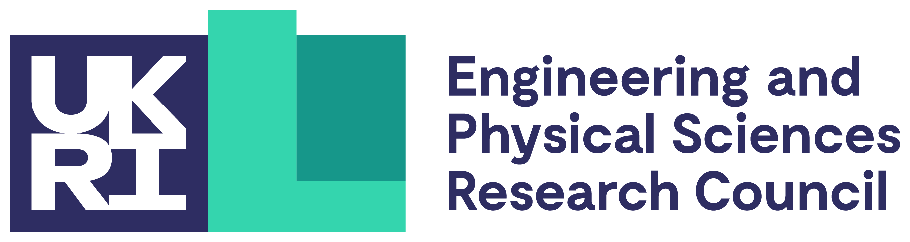

Democratising AI-driven materials discovery: making a powerful platform usable by every scientist
Blessing Gasongo¹, Atish Dixit¹, Alexandros Keros¹, and Themis Prodromakis¹
¹Centre for Electronic Frontiers, School of Engineering, University of Edinburgh, EH9 3BF, U.K. · APRIL AI Hub
Email: B.Gasongo@ed.ac.uk


Introduction
- AI materials-discovery tools are powerful but fragmented: every database, model and predictor uses its own data format.
- Researchers must write custom integration code before any science begins — a barrier to entry.
- Existing interfaces are built for developers, locking out the materials scientists who need them most.
- EMOS unifies these tools; this project makes it usable by anyone, democratising access to AI-driven discovery.

Fig 1. Compose a discovery pipeline visually.

Fig 2. The guided workspace: pick units, run a Feature.
Method
- User-centred redesign in three stages: evaluate, redesign, test.
- Heuristic evaluation of the original UI against Nielsen's 10 usability heuristics (severity 0–4).
- Redesign: a guided form, a visual node editor, real 3D crystals, interactive plots, an assistant and a guided tour.
- Formative usability testing: task success, time, errors and SUS.
- Built behind a swappable data layer, so the live EMOS backend connects without a rewrite.
Analysis
- Heuristic evaluation: 18 issues (mean severity 2.8/4) fell to 4 minor issues (0.8/4) after redesign.
- Usability study (n = 6): task success rose 58% → 92%.
- Mean time on task: 7.4 → 2.9 min; errors per task: 3.1 → 0.6.
- System Usability Scale: 52 → 84 (grade A; industry average 68).

Fig 3. Heuristic severity, before (orange) vs after (purple).
Method (continued)
- Redesigned the Database Extractor end-to-end: breadcrumbs, type filters, colour-coded units, plain-language sliders, one clear Run action.
- Added a visual node editor, real 3D crystal viewers, interactive plots and an always-available AI assistant.
- Annotated screenshot below shows each change in place.

Fig 4. What changed in the Database Extractor, annotated.
Conclusions
- EMOS makes AI materials discovery composable and, for the first time, usable without code.
- Improvement validated by heuristic evaluation and a usability study, not opinion.
- Democratises access: from a research question to a ranked shortlist of real structures.
We acknowledge support of the UKRI AI Hub programme for the APRIL AI Hub [Grant number EP/Y029763/1].
[1] Rowlinson et al. EMOS, APRIL AI Hub 2025. [2] Nielsen J. Heuristic Evaluation, NN/g. [3] Brooke J. SUS, 1996. [4] Zeni et al. MatterGen, Nature 2025.
APRIL AI Hub Showcase 2026
